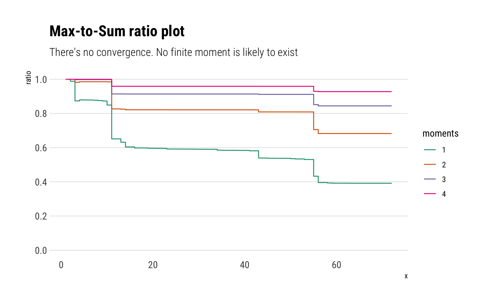
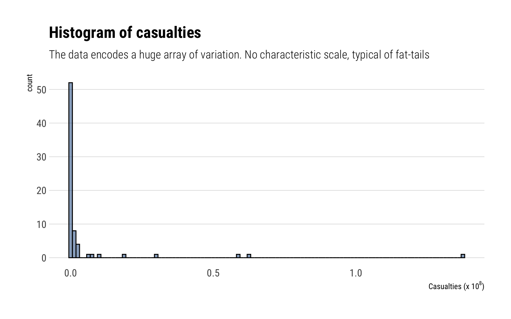
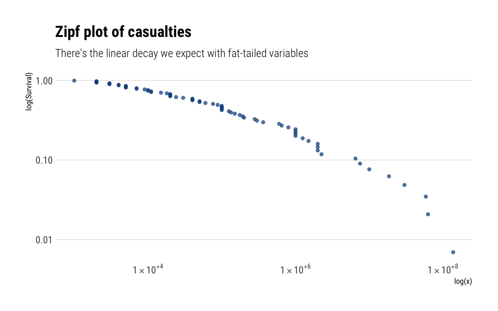
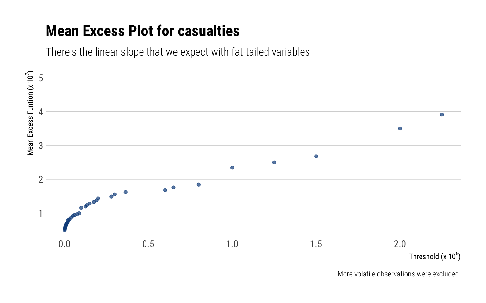
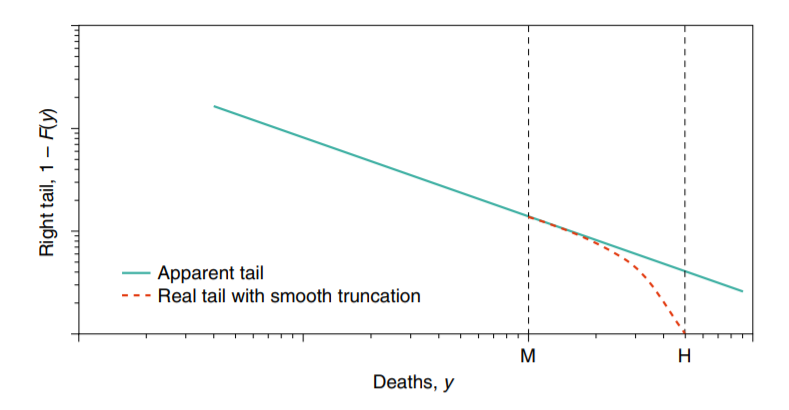
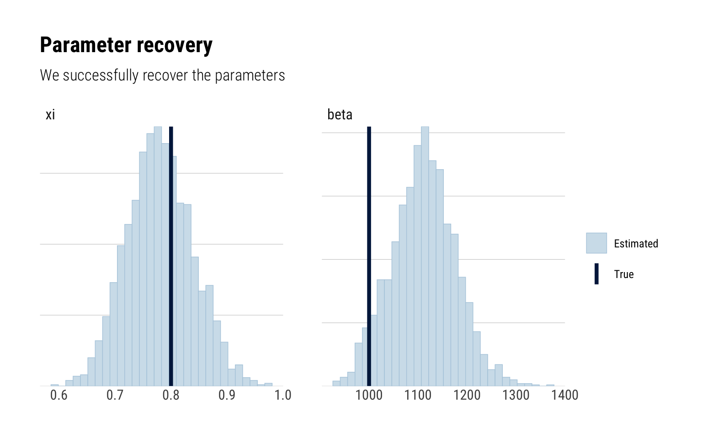
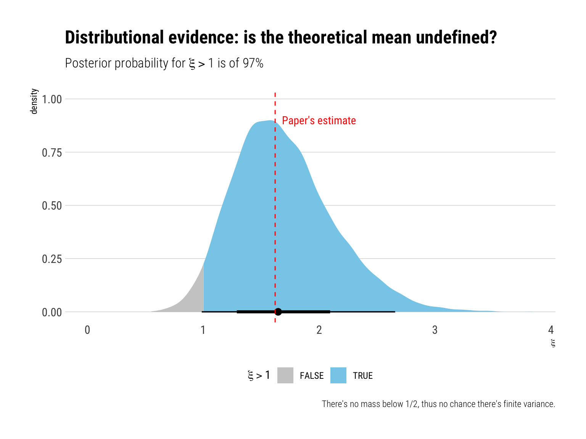
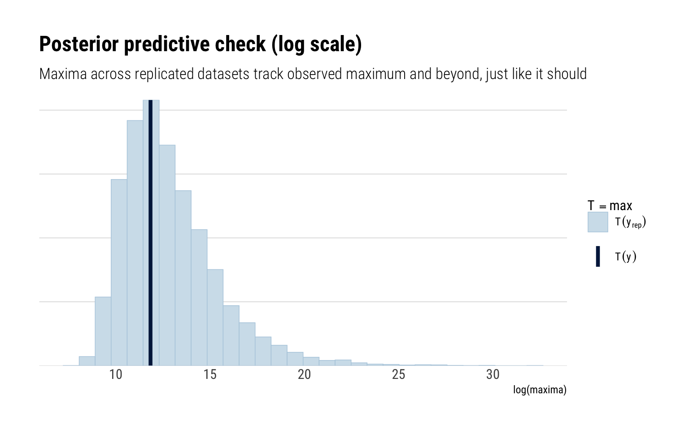
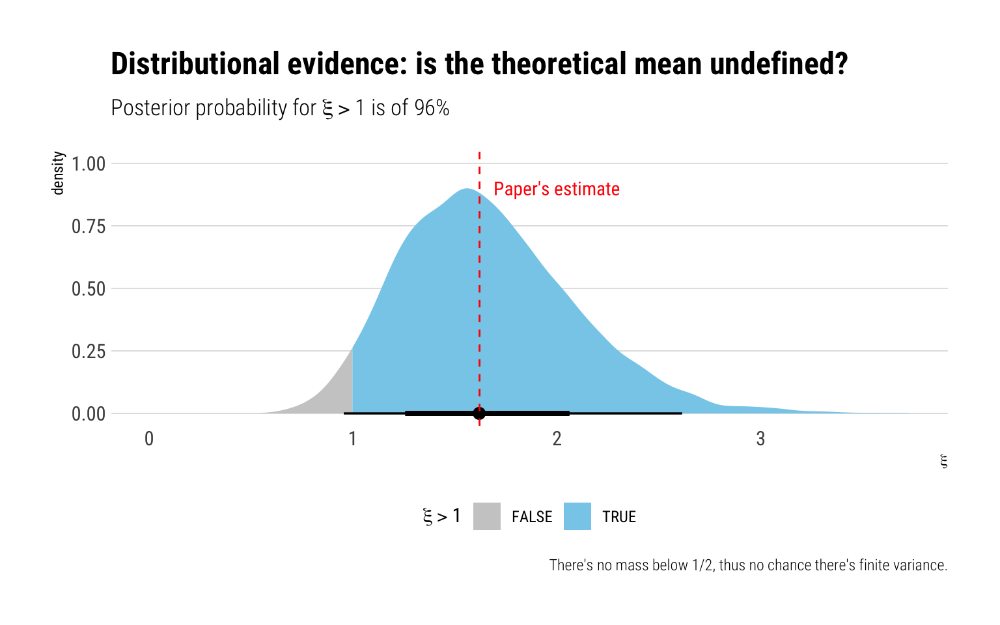

Pasquale Cirillo and Nassim Taleb published a short, interesting and important paper on the Tail Risk of contagious diseases. In short, the distribution of fatalities is strongly fat-tailed: thus rendering any forecast, whether is pointwise or a distributional forecast, useless and dangerous. The distributional evidence is there: the lack of a characteristic scale makes our uncertainty at any point in the pandemic maximal: we can only say that it can always get worse.
Read the paper! It’s short and packed of ideas. In this blogpost, I’ll reproduce the main plots, the main model that uses Extreme Value Theory to model the tail of the distribution of casualties and, finally, I will re-implement the model in a Bayesian framework using Stan.
The Data
Taleb and Cirillo collected data for 72 events with more than 1,000 estimated victims.
Data summary
Name
data
Number of rows
72
Number of columns
8
_______________________
Column type frequency:
character
1
numeric
7
________________________
Group variables
None
Variable type: character
skim_variable
n_missing
complete_rate
min
max
empty
n_unique
whitespace
name
0
1
9
34
0
69
0
Variable type: numeric
skim_variable
n_missing
complete_rate
mean
sd
p0
p25
p50
p75
p100
hist
start_year
0
1
1619.08
517.26
-429
1595.00
1813.0
1916.50
2019
▁▁▁▁▇
end_year
0
1
1613.35
520.65
-426
1593.00
1813.5
1923.75
2020
▁▁▁▁▇
lower
0
1
2660.74
9915.03
1
10.00
75.5
850.00
75000
▇▁▁▁▁
avg_est
0
1
4877.66
19132.36
1
10.00
82.0
850.00
137500
▇▁▁▁▁
upper_est
0
1
7094.56
28705.00
1
10.00
88.0
850.00
200000
▇▁▁▁▁
rescaled_avg_est
0
1
84874.62
409099.85
2
41.75
738.0
6112.25
2678283
▇▁▁▁▁
population
0
1
2037.94
2434.28
50
554.00
990.0
1817.25
7643
▇▂▁▁▂
The estimates for the number of casualties are in the thousands. The avg_est is the estimate for the number of casualities that we are going to be working with.
The plots
Taleb and Cirillo begin the paper with a graphical analysis of the properties of the data. In it, they show that the data present all of the traits of fat-tailed random variables. To reproduce most of the figures, I use an R package that I wrote: ggtails.
Max-to-Sum ratio
Taleb and Cirillo begin by examining the Max-to-Sum ratio plots. A consequence of the Law of Large Numbers (LLN) is the following:
\[
E[X^p] < \infty \iff R_n^p = \dfrac{max(X_1^p, \dots, X_n^p)}{\sum_{i=1}^n X_i^p} \to 0, \ \text{as} \ n \to \infty
\] That is, the theoretical moment \(p\) exists if and only if the ratio of the partial max to the partial sum converges to \(0\). Neither of the fourth moments converges for neither of the fatalities’ estimates
data %>%ggplot(aes(sample = avg_est)) + ggtails::stat_max_sum_ratio_plot() +scale_y_continuous(limits =c(0, 1), breaks =c(0, 0.2, 0.4, 0.6, 0.8, 1)) +scale_color_brewer(palette =2, type ="qual") +labs(title ="Max-to-Sum ratio plot",subtitle ="There's no convergence. No finite moment is likely to exist")

Given that none of the moments converges, it is likely that we are dealing with such a fat-tailed random variable that all of the theoretical moments are undefined. Or if the theoretical moments exist, that the Law of Large Numbers works way too slowly for us to use it. In which case any method that relies on any sample moment estimator of the empirical distribution is useless.
Histogram
Let’s check what exactly is the range of values that Cirillo and Taleb have collected:
data %>%ggplot(aes(avg_est*1000)) +geom_histogram(binwidth =10^8/80, fill ="dodgerblue4", color ="black", alpha =0.5) +scale_x_continuous(labels =function(x) scales::number(x, scale =1/10^8)) +labs(x =TeX("Casualties (x $10^8$)"),title ="Histogram of casualties",subtitle ="The data encodes a huge array of variation. No characteristic scale, typical of fat-tails")

The data contains an incredible arrange of variation. This is typical for fat-tailed random variables.
The Zipf plot
For a Pareto random variable, the slope of the log of the Survival function in log space decays linearly. With the Zipf plot, we compare the decay of the log of the empirical survival function with the linear decay that we expect with a Pareto.
data %>%ggplot(aes(sample =log10(avg_est*1000))) + ggtails::stat_zipf(color ="dodgerblue4", alpha =0.7) +scale_x_log10(label=scientific_10) +scale_y_log10() +labs(title ="Zipf plot of casualties",subtitle ="There's the linear decay we expect with fat-tailed variables",x ="log(x)",y ="log(Survival)")

The empirical survival function indeed decays slowly: it’s almost linear. Thus, giving us a hint that we are dealing with a fat-tailed random variable.
Mean Excess Plot
For a given threshold \(v\), the Mean Excess for a random variable \(X\) is:
\[
E[X - v | X > v]
\] For a Pareto, we expect this mean excess to scale linearly with the threshold.
data %>%ggplot(aes(sample = avg_est*1000)) + ggtails::stat_mean_excess()-> p dat <-layer_data(p)dat %>%filter(y <3.95e07) %>%ggplot() +geom_point(aes(x, y), color ="dodgerblue4", alpha =0.7) +scale_x_continuous(labels =function(x) scales::number(x, scale =1/10^6)) +scale_y_continuous(labels =function(x) scales::number(x, scale =1/10^7)) +expand_limits(y =5e07) +labs(title ="Mean Excess Plot for casualties",subtitle ="There's the linear slope that we expect with fat-tailed variables",caption ="More volatile observations were excluded.",x =TeX("Threshold (x $10^6$)"),y =TeX(" Mean Excess Funtion (x $10^7$)"))

Given that the mean excess plot increases linearly, we are even more convinced that the number of casualties is indeed fat-tailed.
Fitting the tail
The graphical analysis tells us that we are likely dealing with a fat-tailed random variable: the survival function decays very slowly. Thus, the fat-tails make a) an extremely large array of possibilities relevant; b) thus, eliminating the possibility of a characteristic scale or “typical” catastrophe; c) and possibly making the theoretical moments undefined.
Wait a moment: infinite casualties?
We know that the number of casualties is bounded by the total population. Thus, the variable only has the appearance of an infinite mean given its upper bound. Graphically, by ignoring the upper bound, we are positing a continuous tail thus:

The difference, thus, is only relevant in the vicinity of the upper bound \(H\). One could thus keep modeling ignoring the upper bound without too many practical consequences. Nevertheless, it would be epistemologically wrong. To solve this problem, Taleb and Cirillo introduce a log transformation that eliminates the upper bound:
\[
Z = \varphi(Y)=L-H \log \left(\frac{H-Y}{H-L}\right)
\]
Taleb and Cirillo call \(Z\) the dual observations. \(Z\) is the variable that we will model with Extreme Value theory.
L <-1H <-7700000data_to_model <- data %>%mutate(dual = L - H*log( (H-avg_est) / (H-L) ) )
Extreme Value theory on the dual observations
A logical question, then, is how fat-tailed is exactly the tail of casualties from contagious diseases? Extreme Value Theory offers an answer. Indeed, the Pickands–Balkema–de Haan theorem states that tail events (events larger than a large threshold) have as a limiting distribution a Generalized Pareto Distribution (GPD). In math, for large u, the conditional excess function is thus defined and approximated by a GPD:
\[
G_{u}(z)=P(Z \leq z \mid Z>u)=\frac{G(z)-G(u)}{1-G(u)} \approx GPD(z; \xi, \beta, u)
\] Where \(\xi\) is the crucial shape parameter that determines how slowly the tail decays. The larger \(\xi\), the more slowly it decays. For example, the variance is only defined for \(\xi < 0.5\). For \(\xi > 1\), the theoretical mean is not defined.
Crucially, we can approximate the tail of the original distribution \(G(z)\) with a \(GPD\) with the same shape parameter\(\xi\). Finally, Taleb and Cirillo use \(200,000\) as a threshold \(u\). We can check both in the Mean Excess Plot and the Zipf plot that around this value we observe a power-law like behavior.
Maximum Likelihood estimate
We can fit the GPD via maximum likelihood.
fit <- evir::gpd(data_to_model$dual, threshold =200)round(fit$par.ests, 2)
xi beta
1.62 1174.74
Which are the same estimates as Taleb and Cirillo. The standard errors are thus:
round(fit$par.ses, 2)
xi beta
0.52 534.44
Just as we saw with our graphical analysis, the variable is definitely fat-tailed: \(\xi > 0\), which thanks to the relationship of the the Pickands–Balkema–de Haan with the Fisher-Tippet theorem, tells us that the Maximum Domain of Attraction is thus a Fréchet. From Taleb and Cirillo’s paper:
As expected \(\xi\) > 1 once again supporting the idea of an infinite first moment… Looking at the standard error of \(\xi\), one could also argue that, with more data from the upper tail, the first moment could possibly become finite. Yet there is no doubt about the non-existence of the second moment, and thus about the unreliability of the sample mean, which remains too volatile to be safely used.
Let’s see if we can reproduce this conclusions in a bayesian framework.
Bayesian model
I’ll sample from the posterior using Stan’s incredible implementation of Hamiltonian Monte Carlo. Most of the heavy lifting in Stan has already been done by Aki Vehtari in a case study using the GPD.
Our bayesian model will be thus defined:
\[
y \sim GPD(\xi, \beta, u = 200) \\
\xi \sim Normal(1, 1) \\
\beta \sim Normal(1000, 300)
\] The prior for \(\xi\) is weakly informative and yet still opens the opportunity for the data to move our posterior towards a finite mean and finite variance.
Simulating fake data
To verify that our code is correctly working, we’ll simulate data and assess parameter recovery.
Running MCMC with 4 parallel chains...
Chain 1 finished in 1.3 seconds.
Chain 2 finished in 1.3 seconds.
Chain 3 finished in 1.3 seconds.
Chain 4 finished in 1.3 seconds.
All 4 chains finished successfully.
Mean chain execution time: 1.3 seconds.
Total execution time: 1.8 seconds.
print(fit_gpd, pars =c("xi", "beta"))
Inference for Stan model: gpd-202211241219-1-288048.
4 chains, each with iter=1000; warmup=500; thin=1;
post-warmup draws per chain=500, total post-warmup draws=2000.
mean se_mean sd 2.5% 25% 50% 75% 97.5% n_eff Rhat
xi 0.78 0.00 0.06 0.67 0.74 0.78 0.82 0.90 942 1
beta 1111.34 2.24 65.43 983.84 1068.06 1112.49 1153.74 1241.58 856 1
Samples were drawn using NUTS(diag_e) at Thu Nov 24 12:19:38 2022.
For each parameter, n_eff is a crude measure of effective sample size,
and Rhat is the potential scale reduction factor on split chains (at
convergence, Rhat=1).
The credible intervals are in line with the true parameters. Graphically:
posterior <-as.matrix(fit_gpd, pars =c("xi", "beta"))true <-c(0.8, 1000)mcmc_recover_hist(posterior, true) +labs(title ="Parameter recovery",subtitle ="We successfully recover the parameters")

We can thus reasonably recover our parameter of interest \(\xi\) with our current model. Therefore, we can follow along and fit our model to the real data.
Fitting the model
Using the dual observations, we end up with \(25/72\) observations, around \(34.7\)% of the total number of observations
Inference for Stan model: gpd-202211241219-1-6efc8a.
4 chains, each with iter=5000; warmup=2500; thin=1;
post-warmup draws per chain=2500, total post-warmup draws=10000.
mean se_mean sd 2.5% 25% 50% 75% 97.5% n_eff Rhat
xi 1.69 0.01 0.43 0.99 1.39 1.65 1.95 2.66 5847 1
beta 1077.46 3.32 246.93 624.37 902.09 1069.18 1240.92 1579.44 5519 1
Samples were drawn using NUTS(diag_e) at Thu Nov 24 12:19:51 2022.
For each parameter, n_eff is a crude measure of effective sample size,
and Rhat is the potential scale reduction factor on split chains (at
convergence, Rhat=1).
For know, the \(\widehat R\) values look OK, which indicates that there’s no much disagreement between the Markov Chains. The credible intervals rule out the possibility that \(\xi < 0\).
We can intuitively interrogate the posterior for more precise questions in a Bayesian settings. For example, what is the probability that the theoretical mean is undefined, i.e., that \(\xi > 1\):

Therefore, we conclude that it is very likely that the theoretical mean is undefined and we rule out definitely the possibility of a finite second moment. Thus, we reproduce the paper’s conclusions.
Given the fat-tailedness of the data and the resulting lack of characteristic scale from the huge array of variability that it’s possible, there’s no possibility of forecasting what we may face with either a pointwise prediction or a distributional forecast.
Posterior predictive checks
If the model fits well to the data, the replicated data under the model should look similar to the observed data. We can easily generate data from our model because our model is generative: we draw simulated values from the posterior predictive distribution of replicated data.
However, with fat-tailed data: what exactly does it mean for our replicated data to track our observed data. For example, what about the replicated maxima? These definitely should include the observed maxima: but also much larger values. That is the whole point of being in the MDA of a Fréchet.
yrep <-extract(fit_gpd)$yrep ppc_stat(log(dual_observations), log(yrep), stat ="max") +labs(title ="Posterior predictive check (log scale)",subtitle ="Maxima across replicated datasets track observed maximum and beyond, just like it should",x ="log(maxima)")

And this is exactly what our model does: a difference of 30 in a log-scale is huge. We can just as well expect maxima as large as observed, and even much larger.
Convergence diagnostics
One of the main benefits of Stan’s implementation of HMC is that it yells at you when things have gone wrong. We can thus check a variety of diagnostics to check for convergence. Above, we examined that the \(\widehat R\) values look OK. We can also check trace plots:
posterior <-as.array(fit_gpd)color_scheme_set("viridis")mcmc_trace(posterior, pars =c("xi", "beta")) +labs(title ="Traceplots",subtitle ="Traceplots are stationary, well mixed and the chains converge")
Taleb and Cirillo are well aware that they are not working with the more precise of data. Thus, they ‘stress’ the data and check whether the results still hold. Given that we are working with fat-tailed data, the tail wags the dog: data problems can only modify the results if they are in the tail.
Measurement error
To account for measurement error, Taleb and Cirillo recreate 10,000 of their datasets, but this time where each observation is allowed to vary between 80% and 120% of its recorded values. They find that their results are robust to this modification.
In a bayesian setting, we can very easily extend our model to account for uncertainty around the true data. Indeed, in a bayesian model there’s no fundamental difference between a parameter and an observation: one is observed and the other is not. Thus, we formulate the true casualties being measured as missing data.
Therefore, we specify that the measurement comes a normal with unknown mean, the true number of casualties, and that their standard deviation is 20% of the observed value.
\[
y \sim Normal(y_{true}, y*0.2)
\] We fit the model and let Bayes do the rest:
Inference for Stan model: gpd_measurementerror-202211241219-1-98c1f4.
4 chains, each with iter=5000; warmup=2500; thin=1;
post-warmup draws per chain=2500, total post-warmup draws=10000.
mean se_mean sd 2.5% 25% 50% 75% 97.5% n_eff Rhat
xi 1.66 0.00 0.43 0.95 1.35 1.62 1.92 2.61 13151 1
beta 1056.99 1.99 248.82 583.47 887.32 1049.45 1219.83 1562.54 15706 1
Samples were drawn using NUTS(diag_e) at Thu Nov 24 12:19:57 2022.
For each parameter, n_eff is a crude measure of effective sample size,
and Rhat is the potential scale reduction factor on split chains (at
convergence, Rhat=1).
The model sampled remarkably well. We can thus check whether our inferences still hold:

Influential observations
Taleb and Cirillo also stress their data by recreating the dataset 10,000 times and then eliminating from 1 to 7 of the observations with a jacknife resampling procedure. Thus, they confirm that no single observation is driving the inference.
In a bayesian setting, we can check for influential observations by comparing the full-data predictive posterior distribution to the Leave-one-out predictive posterior for each left out point. That is: we compare \(p(y_i | y)\) with \(p(y_i, | y_{-i})\).
We can quickly estimate \(p(\theta_i, | y_{-i})\) for each \(i\) by just sampling from \(p(\theta | y)\) using Pareto Smoothed Importance Sampling LOO. By examining the distribution of the importance weights, we can compare how different the two distributions are. If the weights are too fat-tailed, and the variance is infinite for the \(j\)th observation, then the \(j\)th observation is highly influential observation determining our posterior distribution.
Indeed, no single observation is driving our inference.
Conclusion
Taleb and Cirillo show that the number of casualties are patently fat-tailed. Thus, there’s no typical catastrophe nor characteristic scale: a huge array of possibilities are likely and relevant for any analysis. Thus, there’s no possibility of forecasting what we may face with either a pointwise prediction or a distributional forecast.
Indeed, we cannot even use our sample mean to do anything useful. Given the asymmetric risks involved and the huge uncertainty, the whole of Taleb’s work is very clear: we must kill the pandemic in the egg.